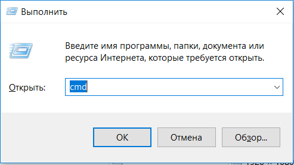
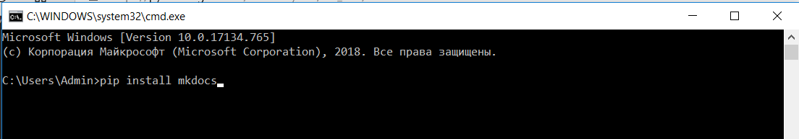

Дополнительная информация
Как установить mkdocs в Python
Щаги:
- Установите Python
- Откройте консоль (нажмите Win+R) и введите в окне cmd 
- Нажмите ОК
- У вас откроется черное окно называемое командной строкой
- В ней нужно ввести команду pip install mkdocs 
- Нажать Enter
- После чего у вас запустится процесс установки библиотеки mkdocs
- Дождитесь его завершения
- После установки вы можите создать свой проект
Создание проекта с сайтом
- Создайте пустую папку
- Скачайте туда файл init.bat Если файл открывается браузером, но не скачивается, то просто нажмите на ссылке ПКМ -> Сохранить ссылку как
- Запустите файл init.bat. После чего у вас появится папку static_site. Это папка вашего проекта
- Скачайте файл serve.bat и положите его в папку static_site.
- Запустите файл serve.bat
- После этого можите открыть ваш сайт
Сборка сайта для GitHub Pages
- Скачайте файл
build.bat.И положите его рядом с файломserve.bat - Запустите файл
build.bat - У вас появится папка
site - Содержимое папки
siteнадо загрузить в GitHub - Команды для работы с mkdocs